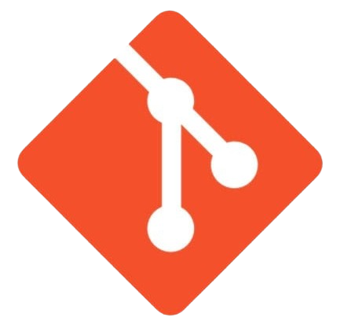
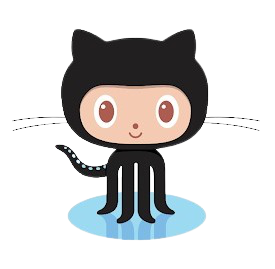
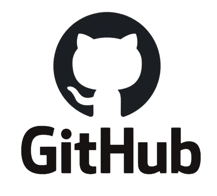

Síntese sobre Softwares de Versionamento (RDE 06)
O que é?
É um sistema que tem por objetivo realizar o controle de versões de um código, documentos ou de qualquer outro tipo de arquivo e pode ser utilizado por um desenvolvimento ou por uma equipe de desenvolvedores.
Geralmente quando vamos desenvolver um projeto ou realizar uma atividade, geralmente criamos uma pasta e dentro da mesma, colocamos o(s) devido(s) arquivo(s) e/ou documento(s), como podemos reparar na ilustração abaixo.
Caso, por exemplo, se trate de uma atividade na qual seja necessário entregar um software, pode-se ter a necessidade de realizar algumas correções ou até mesmo, realizar alguma atualização no(s) arquivo(s), como o incremento de novas funcionalidades no mesmo. Sendo assim, gera uma segunda versão que é um aprimoramento da primeira.
Porém, se o software for de um projeto como para um TCC ou até mesmo for uma aplicação pronta, o arquivo pode vir a passar por constantes atualizações, resultando sempre em novas versões e consequentes novos arquivos
E pode ser que isso se estenda por mais inumeras vezes, resultando em inumeras versões. Dessa forma é muito complicado manter um controle e gerenciar de forma fácil e prática todas essas versões.
Com isso, entram em cena, os SOFTWARES DE VERSIONAMENTO que, através de um REPOSITÓRIO LOCAL , farão todo o gerenciamento através do Histórico de Versões .
Dessa forma, o projeto agora estará versionado, ou seja, em cada arquivo constarão todas as alterações que o mesmo passou.
Porém, quanto o projeto é desenvolvido por uma equipe de pessoas ou de programadores, o Repositório Local acaba não sendo muito util. Dessa forma, tem-se os REPOSITÓRIO REMOTOS , onde, o desenvolvedor ou a equipe de desenvolvedores terá um servidor específico para trabalhar e gerenciar o repositório, fazendo uso de um Software de Versionamento, que vai gerenciar tanto o Repositório Local, como o Repositório Remoto, fazendo com que todos os arquivos que estiveres em um dos repositórios, estejam também no outro e vice-versa.
No conjunto, o Repósito Local e o Repósito Remoto trabalharia mais ou menos da forma que ilustra a figura abaixo:
É muito complicado realizar o gerenciamento de versões de um arquivo. Porém, é ainda mais complicado e complexo quando se trata de mais de uma máquina trabalhando no mesmo repositório. Assim, caso não haja o uso de um Software de Versionamento e se trate de um projeto que trabalhe com o acesso dos usuários aos arquivos, a chance de algum arquivo ser modificado ou excluido indevidamente é muito alta
Analise a situação disposta a seguir:
Nela, notamos a presença de dois usuários: o A e o B , onde ambos trabalham no mesmo projeto porém cada um deles possui o seu Repositório Local.
Ambos os usuários, têm ciencia das alterações que estão sendo realizadas porque o Software realiza esse controle de versão
No entanto, quando os usuários forem sincronizar, o Software irá controlar as ações, isto é, ele vai gerenciar quais ações dos usuários podem ser realizadas ou não e vai notificar, inclusive, caso as ações não sejam de fato realizadas no Repositório Remoto.
A partir da sincronização dos Repositórios Locais, cria-se uma Versão Corrente que vai se distribuida para os usuários, que têm ciencia das alterações que form feitas.
Assim, fica muito mais fácil e produtivo trabalhar em projetos em equipe utilizando-se dos Softwares de Versionamento. Além de eliminar possíveis desencontros, de alguém acidentalmente apagar um arquivo ou alterar algo indevidamente.
Tipos de Software de Controle de Versão
| CENTRALIZADO | DISTRIBUÍDO |
| Possui um repositório central em um servidor com controle de versões | Possui um repositório local com o controle de versões. Ou seja, o usuário pode trabalhar localmente e apenas fazer a atualização apenas quando concluir. |
| Atualizações no Repositório Central (ou Repositório Remoto) | |
| Dependente do servidor: se o servidor parar, todo o projeto que está sendo desenvolvido também para! | Independente do servidor: se o servidor parar, todo o projeto que está sendo desenvolvido também para! |
| Exemplo de software: Subversion | Exemplo de softwares: Mercurial e Git |
GIT

É um software livre de versionamento que surgiu para o desenvolvimento do Kernel do Linux, foi projetado e desenvolvido por Linus Torvallds, em 2005
Cada diretório de trabalho do Git é um repositório com um histórico completo e habilidade total de acompanhamento das revisões, não dependente de acesso a uma rede ou a um servidor central.

I'm an egotistical bastard, and I name all my projects after myself. First Linux, now git.
Sou um bastardo egoísta, e dou o meu nome a todos os meus projectos. Primeiro o Linux, agora o git.
GIT HUB
 - Plataforma de hospedagem de código-fonte e arquivos com controle de versão
- Surgiu em 2008 e foi adquirido em 2018 pela Microsoft, por US$ 7,5 bilhões
- ≈ 100 milhões de projetos
- ≈ 56 milhões de usuários
- OctoCat, mascote do Git Hub: